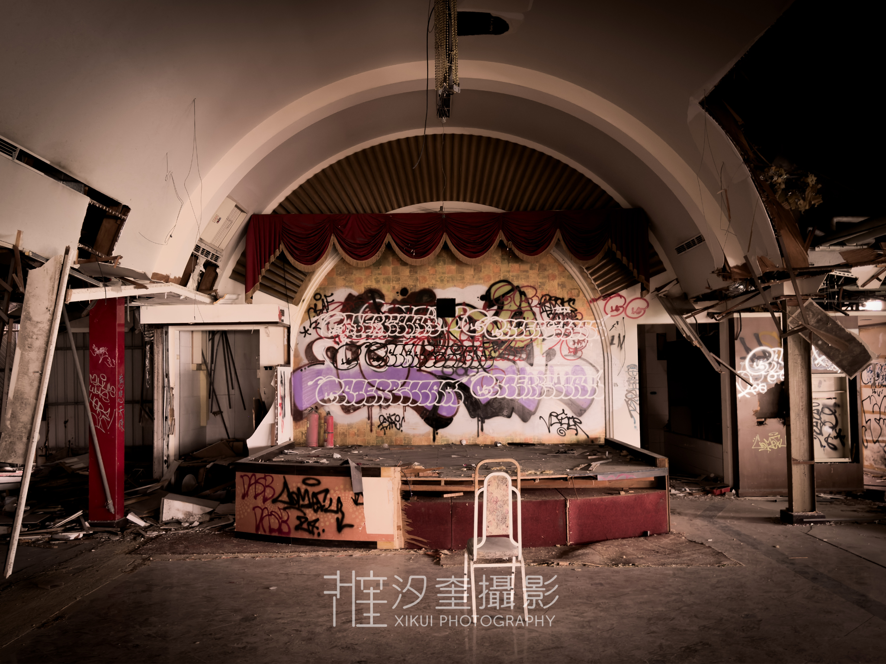

廢墟攝影 · 系列 01
淡水海中天餐廳 · 新北市
淡水河口邊，有一棟建築曾以「海中天」為名。那是一間餐廳，坐擁觀音山與淡水河的景致，全盛時期這裡人聲鼎沸，婚宴、家庭聚餐、情侶約會——所有人都來這裡，對著窗外的水面許願。
它的結束沒有戲劇性。不是一場大火，不是一夕倒閉，而是一紙再平常不過的公文——土地租約到期，地主收回，一切就這樣停在某一個普通的日子裡。餐廳的人拿走了能帶走的，剩下的，就留給時間處理。
我踏入這裡的那天，陽光從破損的窗縫斜斜射進，打在積了塵的地板上。椅子還整齊地排著，桌布已經泛黃，牆上的裝飾畫還掛在原位。沒有人刻意破壞什麼——這裡只是被合法地、安靜地放棄了。
某種程度上，這比廢棄更令人難受。不是無人問津，而是有人清清楚楚地知道，時間到了，就走。
有些地方的消失，不需要理由，只需要一個期限。而那個期限，往往比任何災難都更殘忍。
